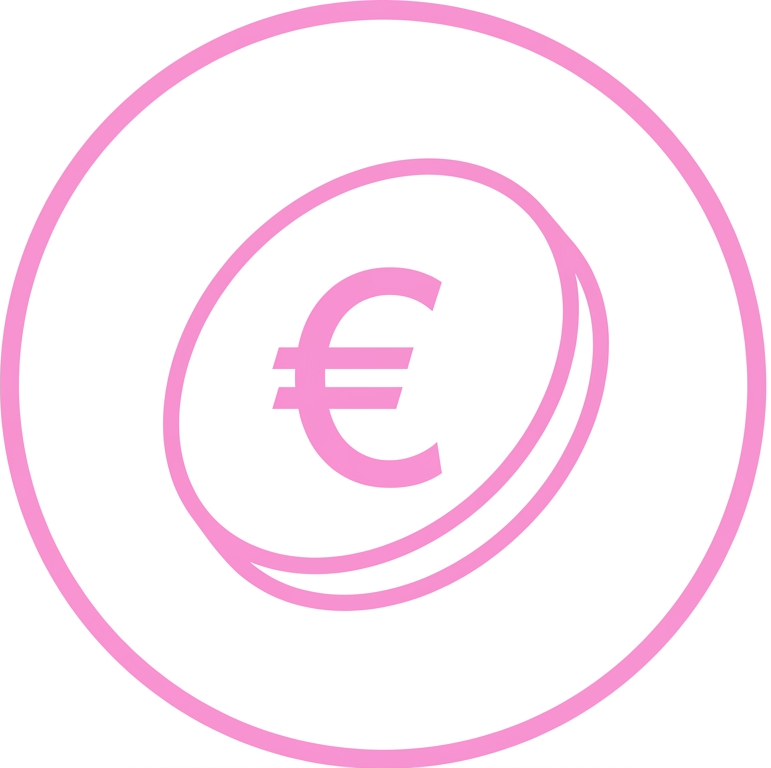

Le développement durable selon Activert
- Activert fabrique des produits toujours plus respectueux des personnes et de l'environnement. De la conception à l'utilisation en passant par la production et le transport, chaque étape du cycle de vie du produit est intégrée à cette démarche d'amélioration continue.
- Premier fabricant de produits d’hygiène professionnelle à détenir une triple certification dans le domaine de l'environnement, de la qualité et de sécurité, Activert poursuit sa démarche de développement durable par des actions concrètes et mesurables.

PERFORMANCE
ÉCONOMIQUE
Assurer une croissance durable grâce à l’innovation et l’amélioration de nos performances.
CONSIDÉRER
L’HOMME
Placer les collaborateurs et nos salariés au cœur de notre démarche.
AGIR POUR
LA SOCIÉTÉ
Contribuer au développement du territoire avec une démarche responsable et citoyenne.
PERFORMANCES
ÉCOLOGIQUES
Réduire notre impact environnemental grâce à une production plus responsable.